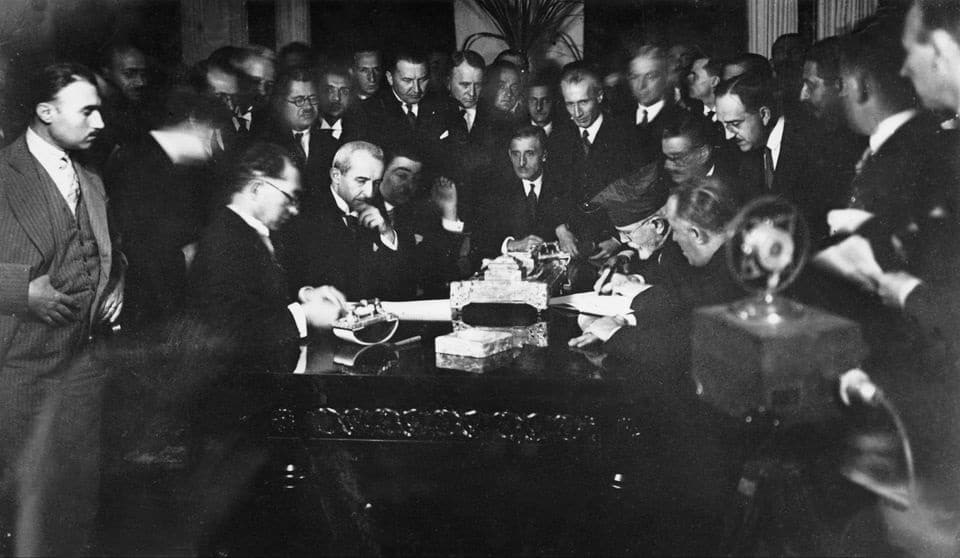
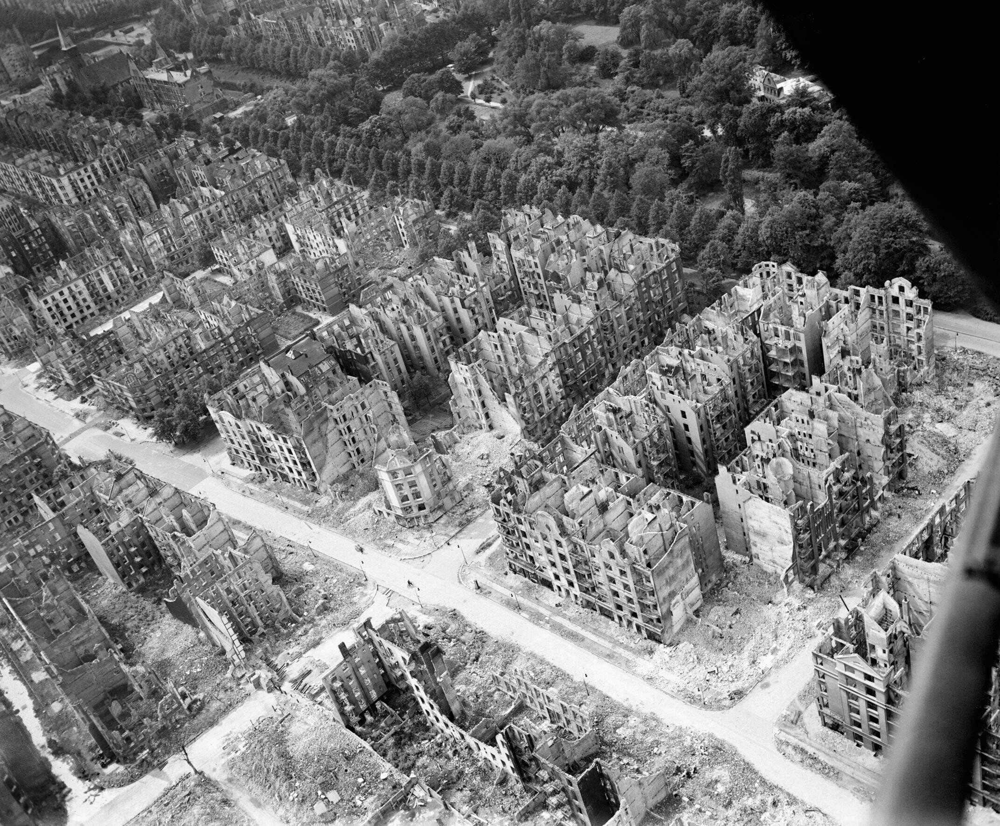
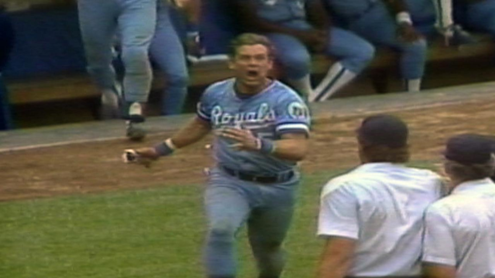

Amelia Mary Earhart was an American aviation pioneer and writer. Earhart was the first female aviator to fly solo across the Atlantic Ocean. She set many other records, was one of the first aviators to promote commercial air travel, wrote best-selling books about her flying experiences, and was instrumental in the formation of The Ninety-Nines, an organization for female pilots.
The Treaty of Lausanne is a peace treaty negotiated during the Lausanne Conference of 1922–1923 and signed in the Palais de Ruminein Lausanne, Switzerland, on 24 July 1923. The treaty officially resolved the conflict that had initially arisen between the Ottoman Empire and the Allied French Republic, British Empire, Kingdom of Italy, Empire of Japan, Kingdom of Greece, Kingdom of Serbia, and the Kingdom of Romania since the outset of World War I. The original text of the treaty is in French. It emerged as a second attempt at peace after the failed and unratified Treaty of Sèvres, which had sought to partition Ottoman territories. The earlier treaty, signed in 1920, was later rejected by the Turkish National Movement which actively opposed its terms. As a result of the Greco-Turkish War, İzmir was reclaimed, and the Armistice of Mudanya was signed in October 1922. This armistice provided for the exchange of Greek-Turkish populations and allowed unrestricted civilian, non-military passage through the Turkish Straits.
British and Canadian airplanes bomb Hamburg by night, and American planes bomb the city by day. By the end of the operation in November, 9,000 tons of explosives will have killed more than 30,000 people and destroyed 280,000 buildings.

Apollo 11 was the rocket that sent the first humans to the moon and landed safely. The rocket left the moon on July 20 and landed in the Sea of Tranquility. Luckily, the astronauts were able to launch back into orbit, and on July 24, they reached the Pacific Ocean safely.
On July 24, 1983, the New York Yankees were playing the Kansas City Royals when George Brett hit a home run while the royals trailing the game 4-3, making them have a 5-4 lead, then the Yankees manager decided for the umpires to check his bat. All the umpires gathered around and measured the bat to make sure the bat didn’t have too much pine tar (which helps players get a better grip of the bat). Once they measured the pine tar, there was too much, and Brett was called out for using an illegal substance, suspending the game for 25 days.